Decodo(데코도)와 Bright Data(브라이트 데이터) 처음 설정하기
| 사용할 기능 | 사이트에서 준비할 상품 | 앱에 넣을 값 |
|---|---|---|
| Coupang 카테고리 | Decodo · Residential Proxies | 프록시 사용자명 + 프록시 비밀번호 |
| Gmarket 카테고리 | Bright Data · Web Unlocker API | API 토큰 + Unlocker 존 이름 + 국가 |
Ali 카테고리에서 Decodo 우회 회선을 선택할 때도 같은 Decodo 정보를 씁니다.
필요한 기능에 맞춰 아래 순서를 따라 하세요. 두 서비스의 잔액은 서로 별개입니다.
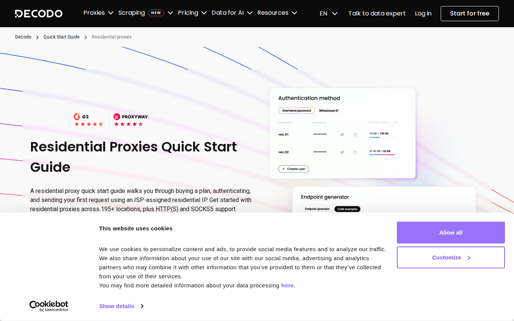
공식 안내 · Decodo 가입 안내
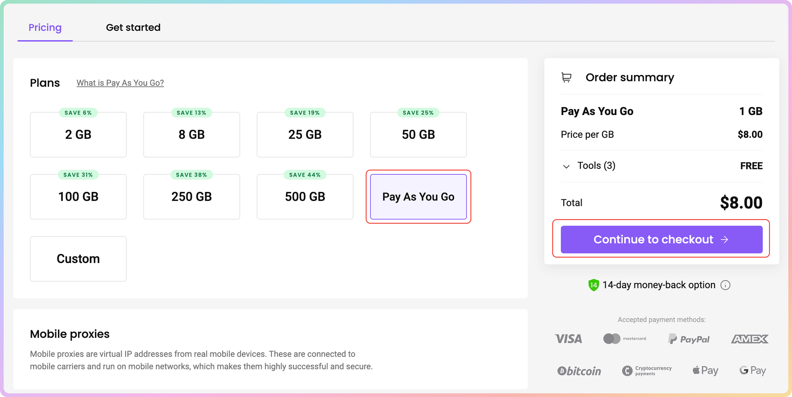
공식 안내 · Decodo Wallet 안내 / Decodo Pay As You Go 안내
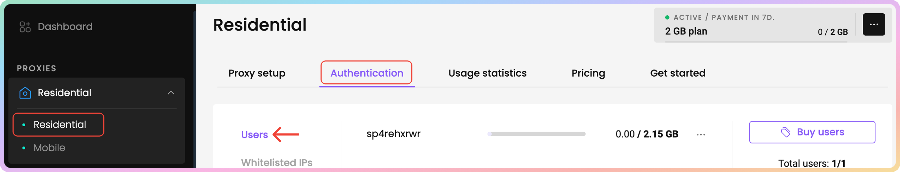
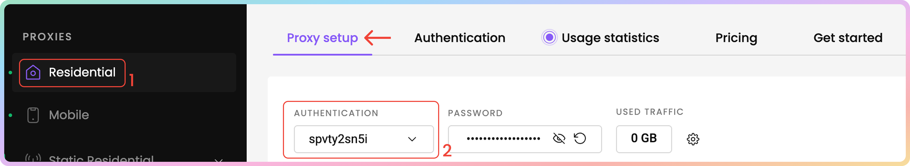
공식 안내 · Decodo 사용자명·비밀번호 안내 / Decodo 연결 안내
프로그램 위쪽 설정 탭 → 아래쪽 Decodo 상자
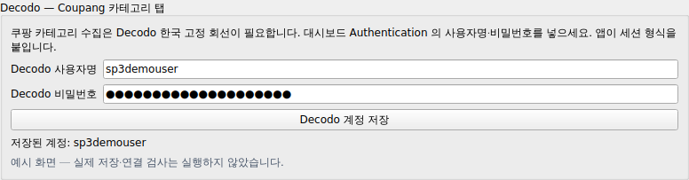
저장 후 비밀번호 칸이 비어 보이고 “저장됨”이 나오면 정상입니다.
화면 맨 아래의 “저장”은 Bright Data용입니다. Decodo는 자기 상자 안의 버튼을 눌러야 합니다.
사용량 확인: Residential의 Usage statistics를 여세요. 전체 용량이 남았어도 사용자별 사용 한도에 걸리면 멈출 수 있습니다.
공식 안내 · Decodo Pay As You Go 안내 / Decodo 추가 용량 안내 / Decodo 사용자명·비밀번호 안내
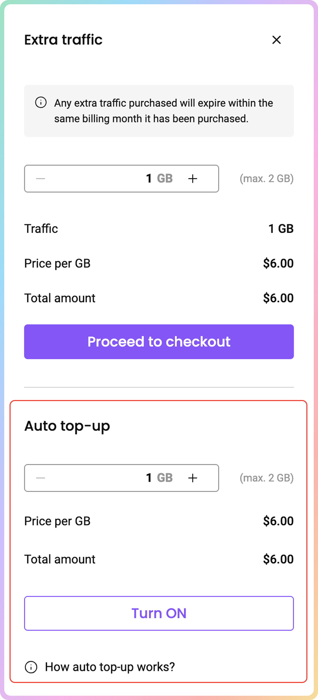
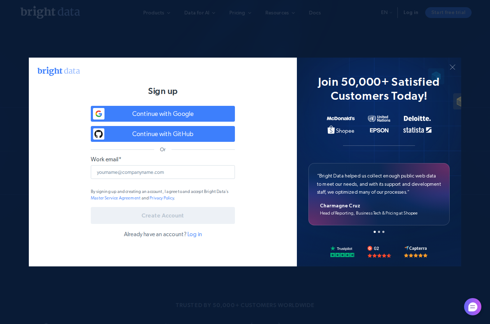
공식 안내 · Bright Data Web Unlocker 만들기
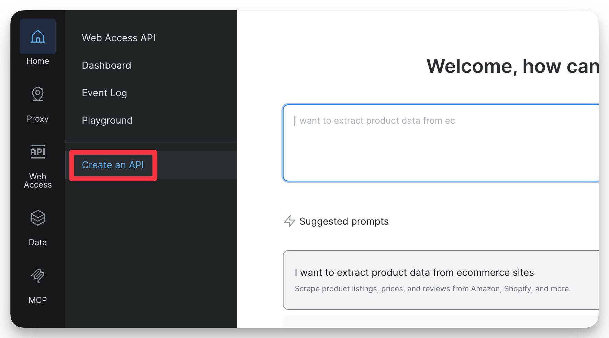
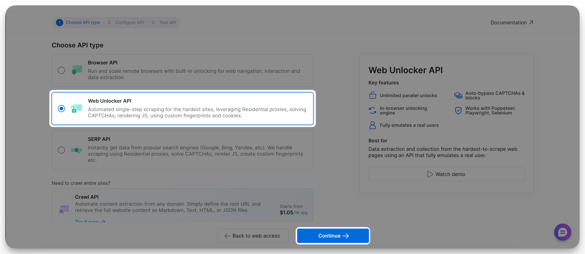
공식 안내 · Bright Data Web Unlocker 만들기
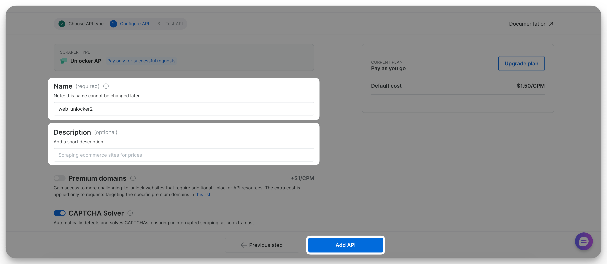
이미 가진 키가 있다면 사용할 수 있습니다. 복사할 수 없는 키는 새로 발급해야 합니다. 갱신하면 이전 키는 작동하지 않습니다.
공식 안내 · Bright Data API 키 발급·권한 안내
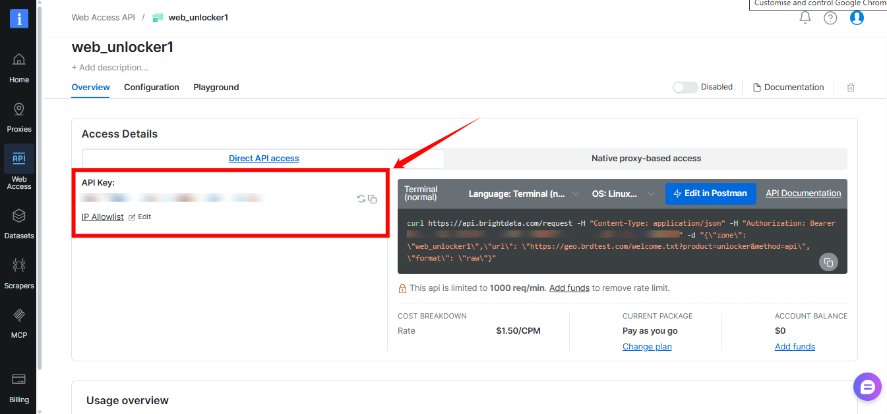
API key = 앱의 API 토큰입니다.
Account ID나 프록시 Password가 아닙니다.
Bearer라는 글자나 명령문 전체를 붙이지 마세요.
공식 안내 · Bright Data 키·이름 확인
공식 안내 · Bright Data 결제 안내
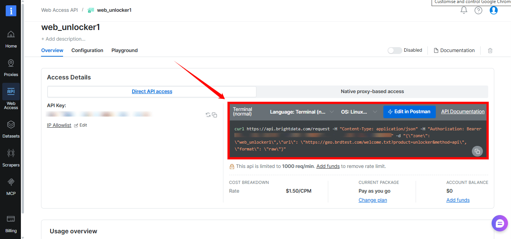
공식 안내 · Bright Data 무료 사용량·충전 안내
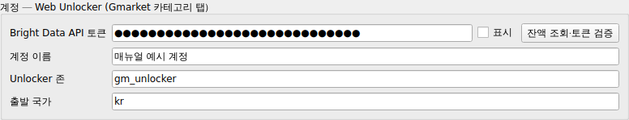
| 설정 칸 | 넣을 값 |
|---|---|
| Bright Data API 토큰 | 본인이 발급한 키 문자열만 붙여넣기 |
| 계정 이름 | 알아보기 쉬운 이름. 예: 우리 회사 (선택) |
| Unlocker 존 | 본인이 만든 Web Unlocker 이름. 예: gm_unlocker |
| 출발 국가 | kr — 영문 소문자 두 글자 |
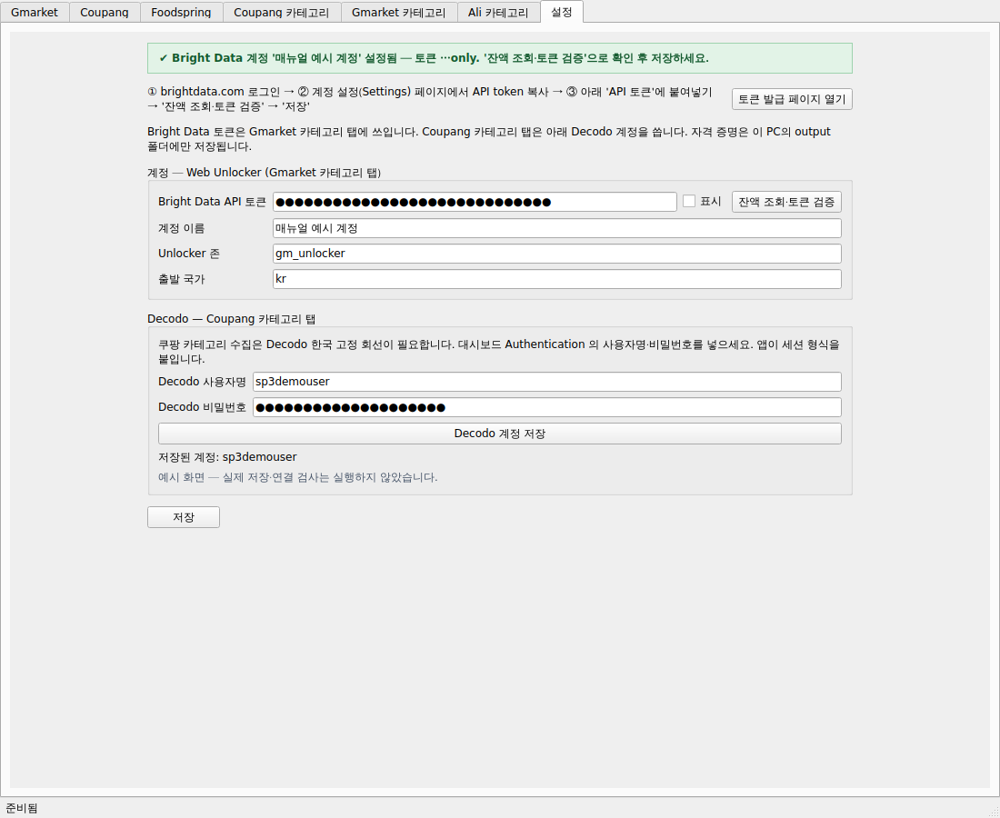
| 보이는 문제 | 먼저 할 일 |
|---|---|
| Decodo · 407 / 연결 거부 | 프록시 사용자명·비밀번호를 다시 복사하세요. 남은 GB와 사용자별 사용 한도도 확인하세요. 407은 용량 부족일 때도 나옵니다. |
| Decodo · 한국 회선 아님 | 다시 “Decodo 계정 저장”을 눌러 확인하세요. 계속 같으면 오류 문구를 담당자에게 전달하세요. |
| 수집용 브라우저 없음 / 설치 확인 실패 | 계정 충전 문제가 아닐 수 있습니다. 프로그램 설치 안내에 따라 수집용 브라우저를 설치하거나 담당자에게 표시된 문구를 전달하세요. |
| Bright Data · 401 / 토큰 거부 | 키 전체를 다시 복사하세요. 만료되거나 갱신 전의 키인지 확인하세요. |
| Bright Data · 403 / 권한 부족 | 잔액 조회 권한, 상품 이용 권한, 계정 제한을 확인하세요. 필요한 권한은 계정 관리자에게 요청하세요. |
| 잔액 조회는 되는데 수집은 실패 | Unlocker 존 이름이 사이트와 같은지, Web Unlocker가 켜져 있는지, 사용량이 남았는지 확인하세요. |
| 429 / 요청이 너무 많음 | 수집을 멈추고 잠시 뒤 다시 시작하세요. 계속되면 플랫폼의 사용 제한을 확인하세요. |
| 입력 칸이나 버튼이 눌리지 않음 | 수집 중이거나 확인 중일 수 있습니다. 작업 종료 후 다시 설정하세요. |
| 저장 후 비밀번호·토큰이 비어 보임 | “저장됨” 표시가 있으면 정상입니다. 다시 입력하지 않고 빈 칸으로 저장하면 기존 값이 유지됩니다. 계정을 바꿀 때는 새 비밀값도 넣으세요. |
이 앱은 계정 정보를 이 PC의 output 폴더에 저장합니다. 연결과 수집 때 해당 서비스로 인증 정보를 보냅니다.
확인 기준: 2026년 9월 28일 프로젝트 설정 화면과 공식 문서.
가입·결제의 마지막 단계는 본인 계정에서 진행해야 합니다. 공식 예시 화면의 가격과 메뉴 모양은 달라질 수 있습니다.
이 문서의 앱 화면에는 문서용 가짜 정보만 사용했습니다. 실제 키를 발급하거나 결제를 실행하지 않았습니다.